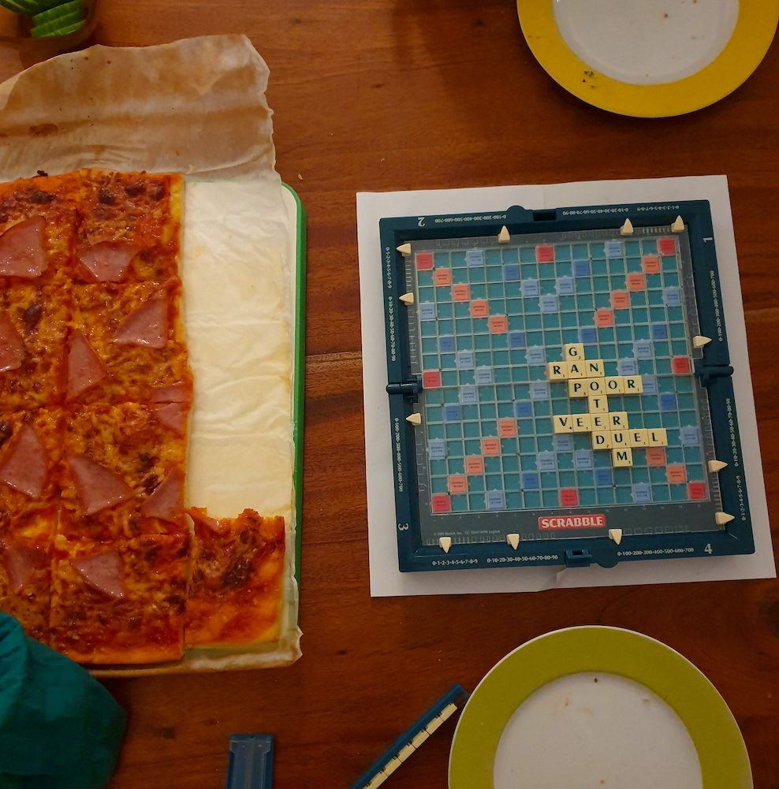

|  | Our family recipes depict a rich migrant history. We have Malaysian and German classics, and some family favourites from my well-travelled, Kiwi/Malaysian mother and women on the Arab/ Malaysian side of my family.
I archive these recipes with my two sons in mind. They are easy to follow and include tips to get them right. To Hannes and Niklas, may you always eat well with humans who nourish your mind, heart and soul. |
| |
|
|
|
|---|---|---|---|
| Ayam Masak Kicap | Vanilla Pancakes | Malaysian Fish Curry | Soya Sauce Noodles |